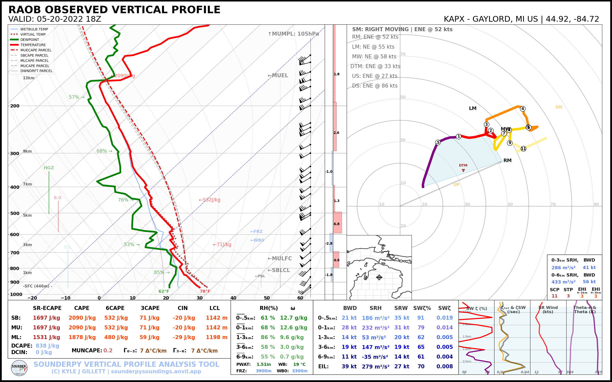

Plotting Soundings with Observed ACARS data
[1]:
# first, import sounderpy! Its fun to import as 'spy'!
import sounderpy as spy
## ---------------------------------- SOUNDERPY ----------------------------------- ##
## Vertical Profile Data Retrieval and Analysis Tool For Python ##
## v3.0.2 | Mar. 2024 | (C) Kyle J Gillett ##
## Docs: https://kylejgillett.github.io/sounderpy/ ##
## --------------------- THANK YOU FOR USING THIS PACKAGE! ------------------------ ##
Understanding SounderPy Functionality
To get observed data, we need to use the ``acars_data()`` class
Reading the documentation on ACARS data access may prove useful before using this notebook: https://kylejgillett.github.io/sounderpy/gettingdata.html#observed-data-acars-aircraft-obs
[2]:
# LETS GET SOME DATA #
# This function will get us an 18z RAOB for APX ahead of the
# Gaylord, MI EF3 tornado on 05/20/2022
clean_data = spy.get_obs_data('apx', '2022', '05', '20', '18')
> OBSERVED DATA ACCESS FUNCTION --
-----------------------------------
> PROFILE FOUND: APX on 05/20/2022 at 18z | From UW
> COMPLETE --------
> RUNTIME: 00:00:02
> SUMMARY: 18Z Launch for KAPX, GAYLORD at 05-20-2022-18Z
> THERMODYNAMICS ---------------------------------------------
--- SBCAPE: 2090.8 | MUCAPE: 2090.8 | MLCAPE: 1878.3 | MUECAPE: 1651.9
--- MU 0-3: 71.1 | MU 0-6: 533.0 | SB 0-3: 71.1 | SB 0-6: 533.0
> KINEMATICS -------------------------------------------------
--- 0-500 SRW: 35.0 knot | 0-500 SWV: 0.019 | 0-500 SHEAR: 21.8 | 0-500 SRH: 186.2
--- 1-3km SRW: 20.9 knot | 1-3km SWV: 0.005 | 1-3km SHEAR: 14.1 | | 1-3km SRH: 54.0
==============================================================
[3]:
# Lets check out the RAP data that we just accessed
# and stored in the `clean_data` variable:
# `clean_data` is a python dictionary of 'clean' vertical profile data
# it comes with temperature, dewpoint, pressure, height, u and v
# as well as a number of useful 'meta data'
clean_data
[3]:
{'p': array([944. , 926.4, 925. , 894.5, 863.5, 850. , 848. , 833.4, 804.1,
795. , 775.7, 774. , 748. , 721.2, 720. , 700. , 685. , 674. ,
670. , 651. , 645.1, 630. , 621.3, 621. , 598.2, 591. , 587. ,
583. , 572. , 554. , 509. , 500. , 473.6, 471. , 446. , 442. ,
425. , 418. , 402. , 400. , 399. , 395. , 386. , 382. , 370. ,
354.7, 354. , 336. , 311.2, 300. , 297. , 279. , 250. , 241. ,
239. , 237.6, 232. , 200. , 194. , 190. , 188. , 170. , 168.9,
165. , 162. , 161. , 160.6, 155. , 152.8, 150. , 138.2, 135. ,
131.3, 131. , 130. , 127. , 125. , 124.8, 122. , 118.7, 118. ,
113. , 112. , 111. , 108. , 103. , 102. , 101. , 100. ]) <Unit('hectopascal')>,
'z': array([ 446, 610, 623, 914, 1219, 1356, 1376, 1524, 1829,
1926, 2134, 2152, 2438, 2743, 2757, 2990, 3168, 3300,
3349, 3584, 3658, 3850, 3962, 3966, 4267, 4364, 4419,
4473, 4625, 4877, 5542, 5680, 6096, 6137, 6550, 6617,
6911, 7035, 7323, 7360, 7378, 7452, 7620, 7696, 7925,
8230, 8243, 8612, 9144, 9400, 9470, 9900, 10640, 10880,
10935, 10973, 11128, 12070, 12260, 12389, 12454, 13067, 13106,
13246, 13356, 13394, 13411, 13628, 13716, 13830, 14326, 14466,
14630, 14645, 14690, 14831, 14927, 14935, 15075, 15240, 15278,
15544, 15599, 15655, 15826, 16123, 16184, 16247, 16310]) <Unit('meter')>,
'T': array([ 26. , 24.3, 24.2, 21.7, 19.2, 18. , 17.4, 16.4, 14.3,
13.6, 13.4, 13.4, 10.9, 8.3, 8.2, 6.4, 5.2, 5.8,
6. , 4.2, 3.6, 2. , 2.4, 2.4, 0.2, -0.5, -0.7,
-0.5, -0.9, -3.1, -9.1, -10.3, -14.1, -14.5, -16.9, -16.7,
-19.1, -19.7, -22.3, -22.5, -22.5, -22.5, -23.9, -24.5, -26.7,
-29.6, -29.7, -32.7, -36.1, -37.7, -37.9, -41.1, -47.1, -49.3,
-49.5, -49.8, -51.1, -59.3, -61.3, -62.3, -62.9, -68.1, -68.3,
-68.9, -68.3, -63.9, -63.8, -62.1, -62.8, -63.7, -68.5, -69.9,
-70.3, -70.3, -68.1, -66.5, -65.3, -65.3, -65.3, -63.8, -63.5,
-62.9, -61.9, -60.5, -59.1, -58.7, -57.5, -55.3, -55.3]) <Unit('degree_Celsius')>,
'Td': array([ 17. , 16.3, 16.2, 15.6, 15. , 14.7, 14.8, 14.2, 13. ,
12.6, 10. , 9.8, 8.7, 7.5, 7.4, 5.3, 4.1, -1.2,
-3. , -3.8, -3.6, -3. , -4.5, -4.6, -4.4, -4.3, -5.3,
-8.5, -12.9, -14.1, -17.1, -17.3, -17.4, -17.4, -20.1, -22.7,
-26.1, -29.7, -31.3, -31.5, -31.5, -35.5, -37.6, -38.5, -36.8,
-34.5, -34.4, -36.4, -39.8, -41.4, -41.5, -45.7, -50.8, -53. ,
-54.3, -54.7, -56.1, -64.3, -66.3, -67.3, -66.9, -72. , -72.2,
-72.9, -72.5, -68.5, -68.4, -67.1, -67.8, -68.7, -73.5, -74.9,
-75.3, -75.3, -74.1, -74.5, -74.3, -74.4, -76.3, -76.5, -76.5,
-78.9, -78.9, -78.5, -79.1, -83.7, -83.5, -83.3, -83.3]) <Unit('degree_Celsius')>,
'u': array([ 10.7246222 , 10.60660172, 10.60660172, 17. ,
22.36948102, 26.99707961, 26.99707961, 27.63986722,
31.81980515, 34.37362398, 39.83431104, 39.83431104,
42.13244437, 45.05336244, 45.05336244, 39.83431104,
39.99960775, 40.12982058, 40.22445359, 40.28302882,
40.30508653, 40.30508653, 40.30508653, 40.30508653,
55.92124435, 56.73165519, 56.73165519, 57.52478501,
57.50175672, 58.97894719, 60.00171105, 60.62177826,
64.08587988, 64.08587988, 58.51531863, 58.51531863,
55.35225748, 53.05840464, 49.9682747 , 49.9682747 ,
49.9682747 , 48.32997061, 44.23421039, 43.93899135,
44.16729559, 50.78742675, 50.78742675, 50.78742675,
51.60657879, 51.09549882, 51.09549882, 53.85980316,
57.09739058, 55.28477501, 54.37846722, 54.37846722,
55.28477501, 61.62892952, 64.34785288, 67.06677624,
67.97308403, 77.94246969, 78.84877747, 91.15018422,
99.6074178 , 102.42649567, 102.42649567, 80.39200027,
71.59831518, 69.53725394, 67.61480784, 52.13005469,
33.7059555 , 34.47199994, 37.03650542, 45.28821067,
51.09549882, 51.09549882, 45.033321 , 37.23909236,
37.60864741, 37.74069899, 38.27679749, 37.58770483,
37.48920614, 36.5444686 , 36.63991854, 35.80278823,
35.86300913]) <Unit('knot')>,
'v': array([ 8.99902654, 10.60660172, 10.60660172, 29.44486373, 31.94692973,
32.17386661, 32.17386661, 32.93991105, 31.81980515, 32.05392292,
33.4249557 , 33.4249557 , 35.35331853, 31.546704 , 31.546704 ,
33.4249557 , 34.77112854, 36.13305274, 37.5099098 , 38.90086875,
40.30508653, 40.30508653, 40.30508653, 40.30508653, 46.92349551,
45.94038855, 45.94038855, 44.9432877 , 43.33068167, 41.29750342,
36.05266524, 35. , 37. , 37. , 36.56442923,
36.56442923, 35.94617631, 35.78834582, 34.98816262, 34.98816262,
34.98816262, 33.84100974, 30.97312756, 29.63722388, 25.5 ,
35.56173905, 35.56173905, 35.56173905, 36.13531549, 29.5 ,
29.5 , 28.63776533, 26.62495049, 25.77971397, 25.3570957 ,
25.3570957 , 25.77971397, 28.7380418 , 30.00589658, 31.27375137,
31.69636963, 36.34517051, 36.76778877, 33.1759539 , 36.25413519,
37.28019562, 37.28019562, 35.79282459, 33.38684268, 25.30949061,
18.11733316, 25.42552651, 28.28265483, 28.92544244, 28.93608934,
29.41050789, 29.5 , 29.5 , 26. , 21.5 ,
20.84681367, 16.01997627, 14.69308593, 13.68080573, 10.74985688,
5.78807521, 5.14940474, 3.76302468, 3.13760674]) <Unit('knot')>,
'site_info': {'site-id': 'KAPX',
'site-name': 'GAYLORD',
'site-lctn': 'MI US',
'site-latlon': [44.92, -84.72],
'site-elv': 446.0,
'source': 'RAOB OBSERVED PROFILE',
'model': 'no-model',
'fcst-hour': 'no-fcst-hour',
'run-time': ['none', 'none', 'none', 'none'],
'valid-time': ['2022', '05', '20', '18']}}
LETS PLOT THE DATA ON A SOUNDING AND HODOGRAPH
[4]:
# we will use the 'show' kwarg here to plot it inline
# but you can also use 'save' and add an additional kwarg 'filename'
# to save the plot to a file!
# for example: `metpy_sounding(clean_data, method='save', filename='04272011_22z_sounding.png')`
# first here we can make a sounding!
spy.build_sounding(clean_data)
> SOUNDING PLOTTER FUNCTION --
---------------------------------
> COMPLETE --------
> RUNTIME: 00:00:19

[ ]: